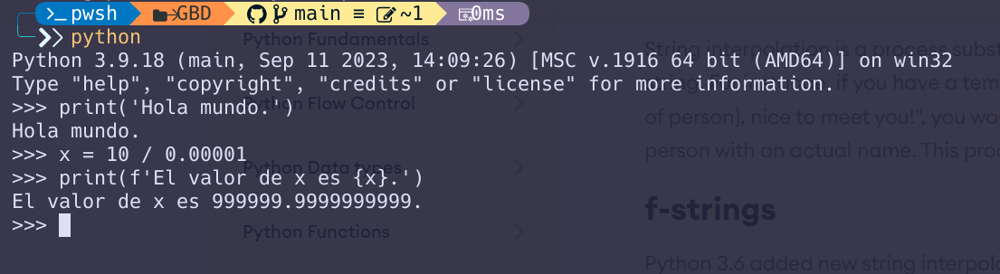

Apuntes de la UD1 - Desarrollo de software
Fases del desarrollo de software
El ciclo de vida del desarrollo del software (SDLC - Software Development Life Cycle) es un proceso que se sigue para desarrollar software. Este proceso consta de varias fases que se realizan de forma secuencial. El proceso en su conjunto ha de completar las tareas de planificación, creación, pruebas, despliegue y mantenimiento del software.
No se trata de un proceso estricto sino que existen distintas metodologías que se adaptan a las necesidades de cada proyecto. Algunas de las metodologías más conocidas son:
- Waterfall: Modelo en cascada. El más antiguo y sencillo, pero también el menos flexible.
- Agile: Metodología ágil. Se basa en el desarrollo iterativo e incremental.
- Scrum: Metodología ágil. Se basa en el desarrollo iterativo e incremental, pero con roles y reuniones definidas.
- ...
Aunque varían según los modelos las fases del ciclo de vida del software se podrían resumir en las siguientes:
Análisis
También se le conoce como análisis de requisitos. En esta fase se recopilan los requisitos del sistema, es decir, se identifican las necesidades que debe satisfacer el software que se va a desarrollar. Los requisitos pueden ser funcionales (lo que el sistema debe hacer) o no funcionales (cómo debe hacerlo). Por ejemplo, un requisito funcional podría ser que el sistema permita a los usuarios registrarse y un requisito no funcional podría ser que el sistema sea fácil de usar.
Esta es una de las fases más importantes del desarrollo de software ya que si no se recopilan correctamente los requisitos el software resultante no cumplirá con las expectativas del cliente. Si se comete un error en esta fase será muy costoso corregirlo en fases posteriores del desarrollo. Esto se traduce en importantes pérdidas de tiempo y dinero.
Diseño
En esta fase se definen la arquitectura del sistema y los componentes que lo forman. El objetivo es transformar los requisitos recopilados en la fase de análisis en un diseño detallado que permita la implementación del sistema.
Se seleccionará la tecnología que se va a utilizar para desarrollar el sistema: lenguaje de programación, base de datos, entorno de desarrollo, etc.
A partir de ahí se definen las estructuras de datos, los algoritmos y las interfaces de usuario que se van a utilizar en el sistema, las entidades y las relaciones (si procede), etc.
Implementación / codificación
En esta fase se escribe el código fuente del sistema. El código fuente es el conjunto de instrucciones, escritas en uno o más lenguajes de programación, que le indican al sistema qué operaciones debe realizar. El código fuente se escribe en el lenguaje de programación, seleccionado en la fase de diseño, y se guarda en archivos de texto plano. Dependiendo del proyecto podrían utilizarse varios lenguajes de programación.
Es en esta fase donde se usará un IDE (Entorno de Desarrollo Integrado) para escribir el código fuente, compilarlo y ejecutarlo. Un IDE es una herramienta que facilita el desarrollo de software, ya que proporciona un editor de texto, un compilador, un depurador, etc.
Compilación
En esta fase obtenemos un programa ejecutable a partir del código fuente generado en la fase de codificación. Para ello, el código fuente se traduce a lenguaje máquina específico del procesador. El resultado de esta traducción es un archivo ejecutable que contiene el programa en lenguaje máquina. Este archivo se puede ejecutar en cualquier ordenador que tenga el mismo procesador (arquitectura) y el mismo sistema operativo que el que se utilizó para compilar el programa.
Veamos esto en algo más de detalle.
Ejecución del código fuente
Una vez tenemos el código fuente escrito es necesario ejecutarlo para que el ordenador realice las operaciones que se han programado.
Atendiendo a la forma en que se ejecuta el código podemos distinguir dos tipos de lenguajes de programación: los lenguajes compilados y los lenguajes interpretados.
- Lenguajes compilados: Los lenguajes compilados son aquellos en los que el código fuente se traduce a un lenguaje máquina específico del procesador. El resultado de esta traducción es un archivo ejecutable que contiene el programa en lenguaje máquina. Este archivo se puede ejecutar en cualquier ordenador que tenga el mismo procesador (arquitectura) y el mismo sistema operativo que el que se utilizó para compilar el programa. Ejemplos de lenguajes compilados son C, C++, Pascal, etc.
- Lenguajes interpretados: Los lenguajes interpretados son aquellos en los que el código fuente se traduce (interpreta) a lenguaje máquina en tiempo de ejecución. El programa que se encarga de realizar esta traducción se llama intérprete. El intérprete lee el código fuente, lo traduce a lenguaje máquina y lo ejecuta. Ejemplos de lenguajes interpretados son Python, PHP, JavaScript, etc.
Lenguajes semicompilados
Existe una tercera categoría de lenguajes de programación que son los lenguajes semicompilados. Estos lenguajes son compilados en el sentido de que generan código máquina, pero no para una máquina real, sino para una máquina virtual.
En el caso de Java, por ejemplo, el compilador genera código máquina para la máquina virtual de Java (Java Virtual Machine - JVM). Este código se ejecuta en la JVM, que es un programa que simula un ordenador virtual. La ventaja de este enfoque es que el código Java es independiente de la plataforma, es decir, se puede ejecutar en cualquier ordenador que tenga una JVM instalada.
RPL (Run-Print-Loop)
En los lenguajes interpretados es muy común que se hable de RPL. Un RPL es un intérprete que ejecuta el código que escribe el usuario (run), muestra el resultado de la ejecución (print) y queda a la espera de que el usuario escriba la siguiente instrucción para repetir el proceso (loop).
Por ejemplo, en Python, podemos ejecutar un RPL con el comando python en la consola:

Pruebas
Las pruebas de software son el proceso de comprobar que una aplicación hace lo que se espera que haga, es decir, lo que hemos determinado en la fase de análisis. El objetivo de las pruebas es detectar errores en el software antes de que llegue a los usuarios finales. Existen varios tipos de pruebas, entre las que destacan las pruebas unitarias, las pruebas de integración, las pruebas de sistema y las pruebas de aceptación.
- Pruebas unitarias: Son pruebas que se realizan sobre unidades de código, es decir, sobre las partes más pequeñas del software. El objetivo de estas pruebas es comprobar que cada unidad de código funciona correctamente de forma aislada.
- Pruebas de integración: Son pruebas que se realizan sobre grupos de unidades de código que se han probado individualmente. El objetivo de estas pruebas es comprobar que las unidades de código se integran correctamente y que funcionan bien en conjunto.
- Pruebas de sistema: Son pruebas que se realizan sobre el sistema completo. El objetivo de estas pruebas es comprobar que el sistema cumple con los requisitos especificados en la fase de análisis.
- Pruebas de aceptación: Son pruebas que se realizan en las últimas etapas antes de sacar la nueva versión. Son realizadas por parte del cliente para comprobar que el sistema cumple con sus expectativas. El objetivo de estas pruebas es validar que el sistema satisface las necesidades del cliente.
Explotación
Esta es la última fase del ciclo de vida del software. En esta fase se pone en marcha el sistema y se pone a disposición de los usuarios finales. El objetivo de esta fase es que el sistema sea utilizado por los usuarios para los que se ha desarrollado.
En esta fase se instalará y configurará el software que hemos desarrollado. También se proporcionará la formación necesaria a los usuarios para que puedan utilizar el sistema de forma eficiente. Además, se realizará un seguimiento del sistema para detectar posibles errores y corregirlos.
Esta fase también incluye las fase o subfase de mantenimiento.
Mantenimiento
Esta fase consiste en monitorizar el correcto funcionamiento del software y corregir los errores que se detecten. También se pueden realizar mejoras en el software para añadir nuevas funcionalidades o para adaptarlo a nuevos requisitos. El mantenimiento del software es una tarea continua que se realiza a lo largo de toda la vida del software.
Documentación
La documentación no es una fase en sí misma, sino que es un proceso que se lleva a cabo a lo largo de todo el ciclo de vida del software. La documentación es importante para que otras personas puedan entender cómo funciona el software y cómo se ha desarrollado. La documentación puede ser de varios tipos: documentación de usuario, documentación técnica, manuales de usuario, manuales de instalación, etc.
Frameworks
Un framework es una estructura conceptual y tecnológica que sirve de base para el desarrollo de software. Un framework proporciona una serie de herramientas y componentes que facilitan el desarrollo de aplicaciones. Los frameworks permiten a los desarrolladores centrarse en la lógica de negocio de la aplicación, en lugar de tener que preocuparse por cuestiones técnicas.
En general los frameworks están ligados a un lenguaje de programación específico y están diseñados con un propósito concreto. Por ejemplo, existen frameworks para el desarrollo de aplicaciones web, para el desarrollo de aplicaciones móviles, para el desarrollo de aplicaciones de escritorio, etc.
Por qué usar un framework
Los frameworks permiten ahorrar tiempo y reducir el riesgo de cometer errores puesto que evitan escribir todo desde cero. Además, los frameworks suelen seguir buenas prácticas de programación y proporcionan una estructura y una arquitectura bien definida para el desarrollo de aplicaciones. Otras ventajas de usar un framework son:
- Código más seguro: Las piezas que incluye el framework suelen estar probadas y ser seguras.
- Facilidad para realizar pruebas y depuración: Los frameworks suelen incluir herramientas para realizar pruebas y depuración de aplicaciones.
- Evitar duplicidad de código: Los frameworks suelen proporcionar componentes reutilizables que permiten evitar la duplicidad de código.
Por otro lado también hay inconvenientes en el uso de frameworks:
- Curva de aprendizaje: Los frameworks suelen tener una curva de aprendizaje pronunciada.
- Limitaciones: Los frameworks pueden imponer limitaciones a la hora de desarrollar aplicaciones.
- Dependencia: Los frameworks pueden crear dependencia con el framework. Si más adelante se quiere cambiar de framework posiblemente será necesario reescribir la aplicación.
Ejemplos de frameworks
- Django: Framework para el desarrollo de aplicaciones web en Python (del lado del servidor).
- Spring: Framework para el desarrollo de aplicaciones empresariales en Java.
- Angular: Framework para el desarrollo de aplicaciones web en TypeScript (del lado del cliente).
- React: Framework para el desarrollo de aplicaciones web en JavaScript (del lado del cliente).
- Flutter: Framework para el desarrollo de aplicaciones móviles en Dart.
- .NET: Framework para el desarrollo de aplicaciones en C#.NET.
- Ruby on Rails: Framework para el desarrollo de aplicaciones web en Ruby.
- Laravel: Framework para el desarrollo de aplicaciones web en PHP.
- Qt: Framework para el desarrollo de aplicaciones de escritorio en C++.
- Electron: Framework para el desarrollo de aplicaciones de escritorio en JavaScript.
- Unity: Framework para el desarrollo de videojuegos en C#.
- etc.
Lenguajes de programación
Un lenguaje de programación es un lenguaje formal que se utiliza para escribir instrucciones que se pueden traducir a código máquina y que permiten controlar el comportamiento de una máquina. Los lenguajes de programación se utilizan para desarrollar software, es decir, programas informáticos que se ejecutan en un ordenador.
El objetivo de un lenguaje de programación es facilitar la escritura de programas informáticos. Los lenguajes de programación permiten a los programadores escribir instrucciones en un lenguaje que es más fácil de entender que el lenguaje máquina. Dicho de otra forma, un lenguaje de programación permite abstraerse de los detalles de la máquina (arquitectura del procesador, memoria, sistema operativo, etc.) y centrarse en la lógica del programa.
Todo lenguaje de programación consta de:
- Alfabeto: Conjunto de símbolos que se pueden utilizar para escribir instrucciones.
- Sintaxis: Conjunto de reglas que definen la estructura del lenguaje.
- Semántica: Conjunto de reglas que definen el significado de las instrucciones.
Además de estos tres elementos hay que tener en cuenta que todo lenguaje conste de un conjunto de palabras reservadas que no se pueden utilizar como identificadores. Estas son las plataformas con significado especial que se utilizan para escribir programas.
Alto y bajo nivel
Cuando se habla de nivel con respecto a un lenguaje de programación se hace referencia al nivel de abstracción del lenguaje. Es decir, cuan alejado está del hardware. Los lenguajes de alto nivel son aquellos que están más cerca del lenguaje humano y los lenguajes de bajo nivel son aquellos que están más cerca del lenguaje máquina.
Ejemplos de lenguajes de alto nivel son Python, Java, C#, JavaScript, etc. Ejemplos de lenguajes de bajo nivel son C, C++, Ensamblador, etc.
Clasificación de los lenguajes de programación
Clasificar los lenguajes de programación es cada vez más difícil debido a la gran cantidad de lenguajes que existen y a la diversidad de paradigmas de programación. Los lenguajes actuales toman elementos de diferentes paradigmas y no se pueden clasificar fácilmente en una única categoría.
Es por ello más interesante hablar de paradigmas de programación antes que categorías. Algunos de los paradigmas de programación más conocidos son:
- Programación imperativa: Se basa en la ejecución de instrucciones que modifican el estado del programa. Ejemplos de lenguajes imperativos son C, C++, Java, etc.
- Programación declarativa: Se basa en la descripción de la solución en lugar de en la secuencia de instrucciones. Ejemplos de lenguajes declarativos son SQL, Prolog, etc.
- Programación orientada a objetos: Se basa en la creación de objetos que encapsulan datos y comportamiento. Ejemplos de lenguajes orientados a objetos son Java, C#, Python, etc.
- Programación funcional: Se basa en la aplicación y composición de funciones. En estos lenguajes las funciones son el elemento fundamental. Ejemplos de lenguajes funcionales son Erlang, Haskell, etc.
Dependiendo de cómo se ejecuten las instrucciones, los lenguajes de programación se pueden clasificar en dos tipos:
- Lenguajes compilados: Son aquellos en los que el código fuente se traduce a un lenguaje máquina específico del procesador. El resultado de esta traducción es un archivo ejecutable que contiene el programa en lenguaje máquina. Este archivo se puede ejecutar en cualquier ordenador que tenga el mismo procesador (arquitectura) y el mismo sistema operativo que el que se utilizó para compilar el programa. Ejemplos de lenguajes compilados son C, C++, Pascal, etc.
- Lenguajes interpretados: Son aquellos en los que el código fuente se traduce (interpreta) a lenguaje máquina en tiempo de ejecución. El programa que se encarga de realizar esta traducción se llama intérprete. El intérprete lee el código fuente, lo traduce a lenguaje máquina y lo ejecuta. Ejemplos de lenguajes interpretados son Python, PHP, JavaScript, etc.
Como comentábamos antes, también hay lenguajes semicompilados, como Java, que generan código máquina para una máquina virtual. Son compilados en el sentido de que se genera código objeto, pero no para una máquina real, sino para una máquina virtual. Como ejemplo de máquinas virtuales tenemos la JVM de Java, el CLR de .NET o BEAM de Erlang. Estas máquinas virtuales son programas que simulan un ordenador y que permiten ejecutar este código máquina en cualquier ordenador que tenga dicha máquina virtual instalada.
En el caso de Java, por ejemplo, podremos escribir un programa en Java y ejecutarlo en cualquier ordenador que tenga una JVM instalada, independientemente de la arquitectura del procesador o del sistema operativo.